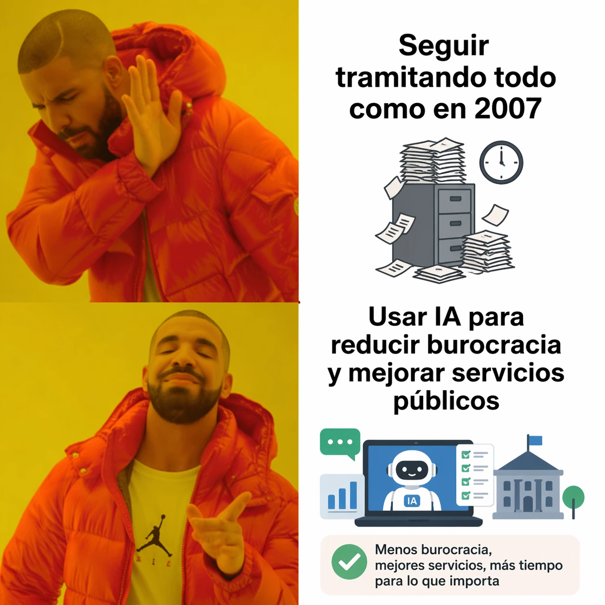

estrategIA #134 ·
El trámite de siempre
El contexto
El meme contrapone mantener los trámites de siempre y aprovechar la IA para reducir esperas y mejorar la atención. Acompañaba un artículo sobre los ayuntamientos como lugares donde probar estos cambios. El objetivo que propone es facilitar la vida de la ciudadanía, no solo incorporar una herramienta nueva.
Publicado en: estrategIA #134 — La hora de los ayuntamientos inteligentes: la administración local como laboratorio de la IA pública
Leer el texto de la imagen
Seguir tramitando todo como en 2007 Usar IA para reducir burocracia y mejorar servicios públicos Menos burocracia, mejores servicios, más tiempo para lo que importa